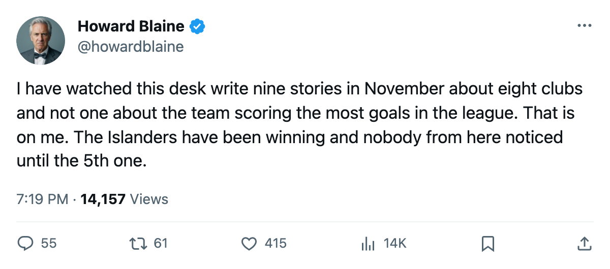
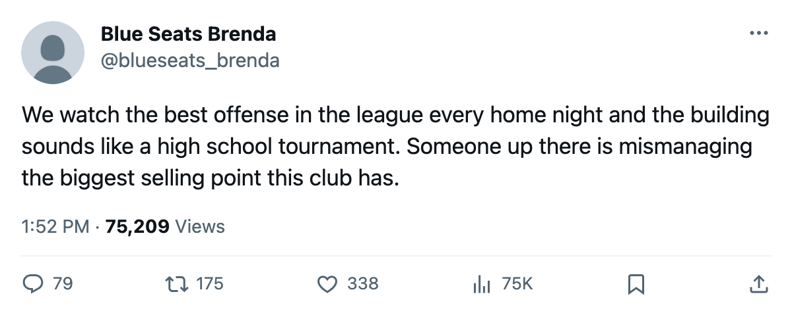

Fifty-Seven Goals, 13,279 Seats Taken: New York Leads the League in Scoring With the Second-Least Support
The Islanders have the longest active win streak in hockey, the most goals by any club in 17 or fewer games, and the 29th-busiest building in a 30-club league
 Howard BlaineSenior writer, The Blaine Rankings · The Hockey Gazette
Howard BlaineSenior writer, The Blaine Rankings · The Hockey Gazette
 New York Islanders has won 5 straight games. The Islanders have scored 57 goals in 17 games, the most of any club in the league with 17 or fewer games on the schedule, and they have drawn 13,279 fans a night, the second-lowest attendance in the 30-club league behind only
New York Islanders has won 5 straight games. The Islanders have scored 57 goals in 17 games, the most of any club in the league with 17 or fewer games on the schedule, and they have drawn 13,279 fans a night, the second-lowest attendance in the 30-club league behind only  Phoenix Coyotes at 11,426. This paper has not written about either the offense or the building in November. It should have.
Phoenix Coyotes at 11,426. This paper has not written about either the offense or the building in November. It should have.
At 21 points they sit 4th in the Atlantic Division and 6th in the Eastern conference standings. Eight points separate 1st from 6th in the conference. New York has 2 fewer games played than division-leader  New York Rangers, which gives the club a road into the top half of the conference without winning a single game by April.
New York Rangers, which gives the club a road into the top half of the conference without winning a single game by April.
The scoring runs through 2 men and the rest of the lineup
 Alexei Yashin83 is 32 years old. He has 12 goals, 11 assists, 23 points, and a 111-point pace over 82 games. He logs 21.6 minutes a night, the 22nd-highest load in the league, and the Book has him at 83 overall. He was the 2nd pick of the 1992 draft and is playing the 14th season of a career that has seen him wear a jersey in every October since that draft.
Alexei Yashin83 is 32 years old. He has 12 goals, 11 assists, 23 points, and a 111-point pace over 82 games. He logs 21.6 minutes a night, the 22nd-highest load in the league, and the Book has him at 83 overall. He was the 2nd pick of the 1992 draft and is playing the 14th season of a career that has seen him wear a jersey in every October since that draft.
 Mark Parrish81 is 28. He has 12 goals and 8 assists for 20 points at a 96-point pace. The Book puts him at 81. He was a 3rd-round pick, 79th overall, in 1996, and he plays 21.6 minutes a night, matching Yashin to the tenth of a minute.
Mark Parrish81 is 28. He has 12 goals and 8 assists for 20 points at a 96-point pace. The Book puts him at 81. He was a 3rd-round pick, 79th overall, in 1996, and he plays 21.6 minutes a night, matching Yashin to the tenth of a minute.
Two players have 24 of New York's 57 goals between them. That leaves 33 goals distributed across the rest of the lineup, and the breadth of the scoring, not the star power at the top, is what separates this offense from one that lives on 2 names. The team scored 5 goals against Phoenix Coyotes on October 29, 5 against  Edmonton Oilers on November 8, and 4 against
Edmonton Oilers on November 8, and 4 against  Montreal Canadiens,
Montreal Canadiens,  Ottawa Senators and
Ottawa Senators and  Boston Bruins in single nights. No game in the last 5 produced fewer than 3.
Boston Bruins in single nights. No game in the last 5 produced fewer than 3.
DiPietro is 21 and holding the net
 Rick DiPietro86 was the 1st pick of the 2000 draft. He is 21. He has 8 wins, 5 losses, a 2.46 goals-against average and a 0.880 save percentage in 14 starts. The Book grades him at 86. The Development Index has him on a heater. The offense drives the winning streak more than the goaltending does, but DiPietro has given the team something close to a .500-goaltending floor in an age when most 21-year-olds are still adjusting to the league's traffic.
Rick DiPietro86 was the 1st pick of the 2000 draft. He is 21. He has 8 wins, 5 losses, a 2.46 goals-against average and a 0.880 save percentage in 14 starts. The Book grades him at 86. The Development Index has him on a heater. The offense drives the winning streak more than the goaltending does, but DiPietro has given the team something close to a .500-goaltending floor in an age when most 21-year-olds are still adjusting to the league's traffic.

The building is the problem nobody from this desk wrote about
The payroll is $61.02M, 9th in the league. The cost per point is $2.91M, which puts New York 13th in the efficiency column. The profit is $18.46M, the ticket price is $81, and the average attendance is 13,279. The club earns $38.71M in revenue and keeps $18.46M of it, a number 14 clubs beat.
New York Islanders fills 13,279 seats per night at $81 apiece. The revenue per game is not a small-club number, but the building is quieter than those in Phoenix Coyotes, Edmonton Oilers,  Los Angeles Kings,
Los Angeles Kings,  San Jose Sharks,
San Jose Sharks,  Calgary Flames,
Calgary Flames,  Minnesota Wild, Ottawa Senators,
Minnesota Wild, Ottawa Senators,  Vancouver Canucks,
Vancouver Canucks,  Atlanta Thrashers,
Atlanta Thrashers,  Colorado Avalanche,
Colorado Avalanche,  Florida Panthers, New York Rangers and
Florida Panthers, New York Rangers and  Philadelphia Flyers, 12 rinks with smaller or similar seats but more bodies in them. The product on the ice and the product in the seats have diverged.
Philadelphia Flyers, 12 rinks with smaller or similar seats but more bodies in them. The product on the ice and the product in the seats have diverged.
 Ilya Kovalchuk90's Atlanta Thrashers draws 14,649 on a $40.34M payroll.
Ilya Kovalchuk90's Atlanta Thrashers draws 14,649 on a $40.34M payroll.  Jarome Iginla92's Calgary Flames draws 14,122. The Islanders outscore both by 15 and 23 goals respectively and fill fewer seats than the worst of them.
Jarome Iginla92's Calgary Flames draws 14,122. The Islanders outscore both by 15 and 23 goals respectively and fill fewer seats than the worst of them.
Where the conference table puts them
The East's 8-deep line sits at Philadelphia Flyers with 19 points in 16 games. New York has 21 in 17, which means 2 points of cushion with 1 fewer game in hand than the 8th club. Ahead of them, Boston Bruins has 22 in 16, and  New Jersey Devils has 23 in 14. The New York Rangers lead is 8 points with 2 more games played. Every one of those positions is inside the range of a 7-game stretch.
New Jersey Devils has 23 in 14. The New York Rangers lead is 8 points with 2 more games played. Every one of those positions is inside the range of a 7-game stretch.
| Club | GP | GF | GA | Pts |
|---|---|---|---|---|
| New York Rangers | 19 | 50 | 44 | 29 |
 Pittsburgh Penguins Pittsburgh Penguins | 15 | 45 | 39 | 24 |
| New Jersey Devils | 14 | 44 | 30 | 23 |
| New York Islanders | 17 | 57 | 45 | 21 |
| Philadelphia Flyers | 16 | 45 | 41 | 19 |
The divisional record reads 1 win, 1 loss, 1 overtime loss in 3 games against the Atlantic, with 17 meetings left. The club has not yet played either New Jersey Devils or New York Rangers in divisional play. Those meetings are scheduled and 2 points of cushion on Philadelphia Flyers is a real number, but the path to a berth runs through clubs that have not yet met New York.
The week ahead
New York Islanders plays at Florida Panthers on November 20 and at  Tampa Bay Lightning on November 21. Florida is 5-8-3 at 17 points with a 3-game losing streak. Tampa Bay is 6-4-5 at 21 points with a 1-game losing streak and a 2-7 road record that is the second-worst in the East. Two points from those two nights would push New York into a tie for 5th in the conference with Boston. This paper logged a Columbus streak in November and was wrong about its length. It logs this one now, and the prediction stands or falls by the morning of November 21.
Tampa Bay Lightning on November 21. Florida is 5-8-3 at 17 points with a 3-game losing streak. Tampa Bay is 6-4-5 at 21 points with a 1-game losing streak and a 2-7 road record that is the second-worst in the East. Two points from those two nights would push New York into a tie for 5th in the conference with Boston. This paper logged a Columbus streak in November and was wrong about its length. It logs this one now, and the prediction stands or falls by the morning of November 21.
The standings at Christmas are the standings in April. That is what this paper believes and says when it holds. New York at 6th in the East on November 17 is not a club that was 14th on October 15. The 5-game streak has moved it. The 57 goals have done the rest. What happens in the building is a separate question, and one the front office will answer with a season-ticket renewal rate rather than a goals-against number.

